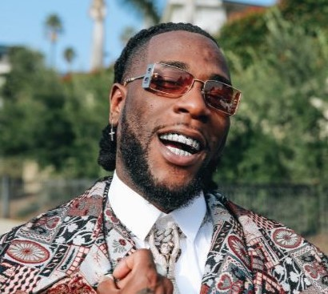

Burna Boy, le géant africain de l’afro-fusion
Burna Boy est un chanteur et compositeur nigérian, qui s’est imposé comme l’un des artistes les plus
influents et les plus populaires du continent africain. Il est né le 2 juillet 1991 à Port Harcourt,
au Nigeria, sous le nom de Damini Ebunoluwa Ogulu. Il a grandi dans une famille de mélomanes, son
grand-père ayant été le manager du légendaire Fela Kuti, le pionnier de l’afrobeat. Il a commencé à
faire ses propres rythmes en utilisant le logiciel FruityLoops, et a développé son style musical
qu’il appelle l’afro-fusion, un mélange d’afrobeat, de dancehall, de reggae, de rap et de R&B.
Il a fait ses débuts en 2012 avec le single Like to Party, qui a connu un succès immédiat au
Nigeria. Il a ensuite sorti son premier album studio LIFE en 2013, qui s’est vendu à 40 000
exemplaires le premier jour de sa sortie. Il a enchaîné avec son deuxième album On a Spaceship en
2015, qui a confirmé son statut de star montante de la scène musicale africaine. Il a collaboré avec
des artistes comme Wizkid, Davido, D’banj ou 2face Idibia.
En 2017, il a signé avec les labels américains Atlantic Records et Warner Music Group, ce qui lui a
permis d’accroître sa visibilité internationale. Il a sorti son troisième album Outside en 2018, qui
a reçu des critiques élogieuses et qui contient le tube Ye, qui a été nommé comme l’une des
meilleures chansons de l’année par plusieurs médias. Il a également participé à la bande originale
du film Black Panther, produit par Kendrick Lamar.
En 2019, il a sorti son quatrième album African Giant, qui a été salué comme un chef-d’œuvre et qui
lui a valu une nomination aux Grammy Awards dans la catégorie Meilleur album de musique du monde. Il
a également remporté le prix du Meilleur artiste international aux BET Awards 2019 et aux MTV Europe
Music Awards 2019. Il a collaboré avec des artistes internationaux comme Beyoncé, Ed Sheeran,
Stormzy ou Sam Smith.
En 2020, il a sorti son cinquième album Twice as Tall, qui a été produit par Diddy et qui contient
des featurings avec Youssou N’Dour, Sauti Sol ou Chris Martin. L’album a été un succès commercial et
critique, et lui a permis de remporter le Grammy Award du Meilleur album de musique du monde en
2021. Il est ainsi devenu le premier artiste nigérian à remporter ce prestigieux prix.
En 2022, il a sorti son sixième album Love Damini, qui est un hommage à sa mère et à sa culture
yoruba. L’album contient des collaborations avec Polo G, J Hus ou Ladysmith Black Mambazo. Il a
également annoncé son intention de se lancer dans la mode et le cinéma.
Burna Boy est donc un artiste complet et polyvalent, qui a su conquérir le cœur du public africain
et mondial avec sa musique innovante et engagée. Surnommé “Odogwu” (le grand homme), il est aussi un
symbole d’inspiration et de fierté pour toute la jeunesse africaine.
 Celebrate Our
Africa
Celebrate Our
Africa